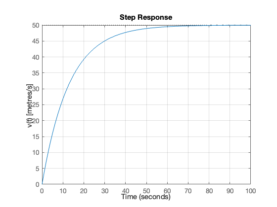
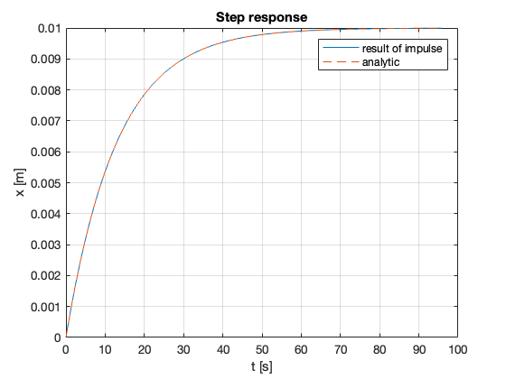
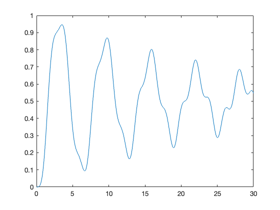

%% Lecturer: set up the TransferFunctions project for in class execution of exercise tests and activities.
% Setup MATLAB to use the TransferFunctionBasics.mlx LiveScript in class.
% I am assuming that this is on the MATLAB Drive
format compact
% Change this to local set up where this Jupyter book is run
cd '/Users/eechris/MATLAB-Drive/Repositories/Transfer-Function-Analysis-of-Dynamic-Systems'
open('TransferFunctions.prj')
format compact % remove extra white space
syms g l s
% Record your answer in pendulumTF
pendulumTF = 1/(s^2 + (g/l))
pendulumTF =
1/(s^2 + g/l)
syms m s k % Symbolic variable declarations
% Record your answer here
Vtf = 1/(m*s + k);
m = 1;
c = 0.1;
k = 0.4;
num = [0 0 1];
denom = [m c k];
G = tf(num,denom)
G =
1
-----------------
s^2 + 0.1 s + 0.4
Continuous-time transfer function.
tFinal = 100
impulse(G,tFinal)
ylabel("x [m]")
tFinal =
100
% Parameters
m = 1300; % kg
k = 100; % N.s/m
Tfinal = 100; % seconds
% Transfer function
num = 1;
den = [m, k, 0];
G = tf(num,den)
% Impulse response
impulse(G, Tfinal),ylabel('x(t) [metres]'),grid
G =
1
----------------
1300 s^2 + 100 s
Continuous-time transfer function.
% Velocity TF
num = 1;
den = [m, k];
G2 = tf(num,den)
impulse(G2, Tfinal),ylabel('v(t) [metres/s]'),grid
G2 =
1
------------
1300 s + 100
Continuous-time transfer function.
% parameters
m = 1300; % kg
k = 100; % N.s/m
Tfinal = 30; % seconds
% transfer function
num = 1;
den = [m, k, 0];
G = tf(num,den)
% step response
step(G, Tfinal),ylabel('x(t) [metres]'),grid
G =
1
----------------
1300 s^2 + 100 s
Continuous-time transfer function.
Tfinal = 100
% Velocity transfer function
num = 1;
den = [m k];
G = tf(num,den)
% step response
step(G, Tfinal),ylabel('v(t) [metres/s]'),grid
Tfinal =
100
G =
1
------------
1300 s + 100
Continuous-time transfer function.
gain = 50/0.01;
% new step response
step(gain*G, Tfinal),ylabel('v(t) [metres/s]'),grid

syms m k positive
syms s x
X = 1/(m*s^2 + k*s)
x = ilaplace(X)
X =
1/(m*s^2 + k*s)
x =
1/k - exp(-(k*t)/m)/k
m = 1300;
k = 100;
Xs = tf([0 0 1],[m k 0]);
[x,t] = impulse(Xs);
xAnalytic = 1/k - exp(-k*t/m)/k;
plot(t,x,t,xAnalytic,'--')
grid
legend("result of impulse", "analytic")
xlabel("t [s]")
ylabel("x [m]")
title("Step response")

% This computes the step response
m = 1300;
k = 100;
Xs = tf([0 0 1],[m k 0]);
[x,t] = step(Xs,20);
% Create your plot here
m = 1;
c = 0.1;
k = 1;
freq = 0.25; % Frequency in Hz.
tfinal = 30; % Simulation duration.
t = linspace(0,tfinal,500);
u = sin(2*pi*freq*t).^2;
% Compute and plot the response
G = tf([0 0 1],[m c k]); % The transfer function
[x,t] = lsim(G,u,t); % Simulate the response using lsim
plot(t,x)

% Write your code here
% Write your code here
% Write your code here
% Write your code here
% Write your code here